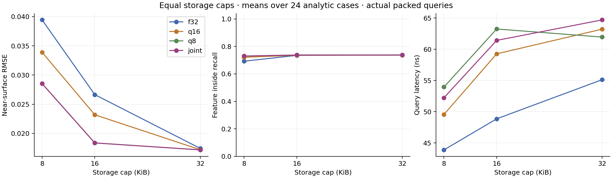
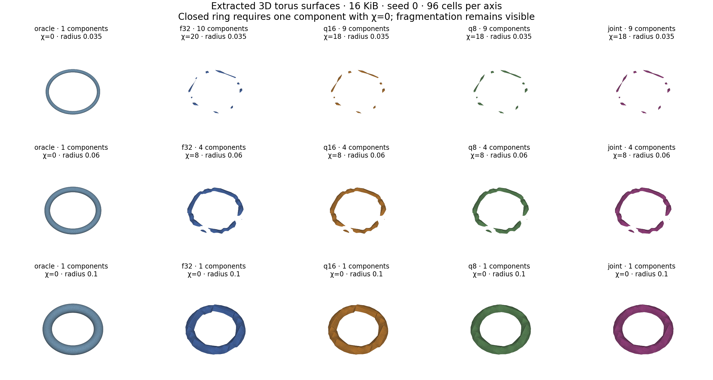

Exact fitting SSE tree knapsack; every baseline uses the same compact layout. Finite analytic sweep, two seeds, no universal topology guarantee. Query latency includes decoding. Same-topology float32 timing isolates the combined codec/payload-layout effect, but uses more memory. DP cost is shared across the three budgets. Means weight cases equally; timing uses within-field batch medians.
Summary CSV · Minimum recovered features · Accuracy budget crossings · Extraction convergence · Raw evidence and source archive · Mesh archives: walls, tori, sphere pairs

| budget | method | cases | mean_bytes | uniform_rmse | near_rmse | near_mae | near_cvar99 | inside_recall | outside_recall | query_ns | same_topology_f32_ns | dp_seconds | candidate_seconds | pack_seconds |
|---|---|---|---|---|---|---|---|---|---|---|---|---|---|---|
| 8192 | f32 | 24 | 8036 | 0.036756 | 0.039444 | 0.033914 | 0.085095 | 0.69238 | 0.84505 | 43.883 | 43.576 | 0.0065256 | 0.005446 | 3.7692e-05 |
| 8192 | q16 | 24 | 8092 | 0.032946 | 0.033904 | 0.028635 | 0.078809 | 0.72103 | 0.84505 | 49.553 | 43.069 | 0.0061785 | 0.005446 | 4.865e-05 |
| 8192 | q8 | 24 | 8148 | 0.0271 | 0.028541 | 0.024112 | 0.065779 | 0.72965 | 0.8457 | 53.952 | 49.708 | 0.0055734 | 0.005446 | 5.9867e-05 |
| 8192 | joint | 24 | 8188 | 0.027075 | 0.028532 | 0.024105 | 0.065751 | 0.72998 | 0.8457 | 52.238 | 44.92 | 0.1349 | 0.005446 | 6.9246e-05 |
| 16384 | f32 | 24 | 16228 | 0.025131 | 0.026647 | 0.0225 | 0.06138 | 0.7347 | 0.84505 | 48.861 | 48.726 | 0.0065256 | 0.005446 | 0.00010145 |
| 16384 | q16 | 24 | 16292 | 0.019899 | 0.023197 | 0.019492 | 0.0566 | 0.73551 | 0.84212 | 59.271 | 54.08 | 0.0061785 | 0.005446 | 0.0001259 |
| 16384 | q8 | 24 | 16356 | 0.012705 | 0.018377 | 0.015692 | 0.046013 | 0.7373 | 0.82096 | 63.246 | 54.512 | 0.0055734 | 0.005446 | 0.00011729 |
| 16384 | joint | 24 | 16380 | 0.012703 | 0.018375 | 0.01569 | 0.046004 | 0.7373 | 0.82096 | 61.421 | 55.532 | 0.1349 | 0.005446 | 0.00013496 |
| 32768 | f32 | 24 | 32612 | 0.012145 | 0.017438 | 0.01498 | 0.041801 | 0.73698 | 0.82096 | 55.129 | 55.913 | 0.0065256 | 0.005446 | 0.00013811 |
| 32768 | q16 | 24 | 32692 | 0.01102 | 0.017212 | 0.014781 | 0.040073 | 0.73698 | 0.82096 | 63.223 | 57.84 | 0.0061785 | 0.005446 | 0.00021098 |
| 32768 | q8 | 24 | 32628 | 0.0095463 | 0.017189 | 0.014757 | 0.039677 | 0.7373 | 0.82096 | 61.955 | 56.252 | 0.0055734 | 0.005446 | 0.00017147 |
| 32768 | joint | 24 | 32764 | 0.0095418 | 0.017181 | 0.014749 | 0.039667 | 0.7373 | 0.82096 | 64.703 | 56.17 | 0.1349 | 0.005446 | 0.00018479 |

Success at both final extraction resolutions, both seeds, and every larger tested feature. Oracle controls must also succeed. Physical size is full wall thickness, tube diameter, or sphere gap. Not reached includes failures caused by the fitting objective.
| shape | budget | method | minimum_feature | physical_size |
|---|---|---|---|---|
| double_sphere | 8192 | f32 | not reached | not reached |
| double_sphere | 8192 | q16 | not reached | not reached |
| double_sphere | 8192 | q8 | 0.1 | 0.1 |
| double_sphere | 8192 | joint | 0.1 | 0.1 |
| double_sphere | 16384 | f32 | not reached | not reached |
| double_sphere | 16384 | q16 | not reached | not reached |
| double_sphere | 16384 | q8 | 0.1 | 0.1 |
| double_sphere | 16384 | joint | 0.1 | 0.1 |
| double_sphere | 32768 | f32 | 0.1 | 0.1 |
| double_sphere | 32768 | q16 | 0.1 | 0.1 |
| double_sphere | 32768 | q8 | 0.1 | 0.1 |
| double_sphere | 32768 | joint | 0.1 | 0.1 |
| thin_box | 8192 | f32 | 0.035 | 0.07 |
| thin_box | 8192 | q16 | 0.035 | 0.07 |
| thin_box | 8192 | q8 | 0.035 | 0.07 |
| thin_box | 8192 | joint | 0.035 | 0.07 |
| thin_box | 16384 | f32 | 0.035 | 0.07 |
| thin_box | 16384 | q16 | 0.035 | 0.07 |
| thin_box | 16384 | q8 | 0.035 | 0.07 |
| thin_box | 16384 | joint | 0.035 | 0.07 |
| thin_box | 32768 | f32 | 0.035 | 0.07 |
| thin_box | 32768 | q16 | 0.035 | 0.07 |
| thin_box | 32768 | q8 | 0.035 | 0.07 |
| thin_box | 32768 | joint | 0.035 | 0.07 |
| torus | 8192 | f32 | not reached | not reached |
| torus | 8192 | q16 | 0.1 | 0.2 |
| torus | 8192 | q8 | 0.1 | 0.2 |
| torus | 8192 | joint | 0.1 | 0.2 |
| torus | 16384 | f32 | 0.1 | 0.2 |
| torus | 16384 | q16 | 0.1 | 0.2 |
| torus | 16384 | q8 | 0.1 | 0.2 |
| torus | 16384 | joint | 0.1 | 0.2 |
| torus | 32768 | f32 | 0.1 | 0.2 |
| torus | 32768 | q16 | 0.1 | 0.2 |
| torus | 32768 | q8 | 0.1 | 0.2 |
| torus | 32768 | joint | 0.1 | 0.2 |
Smallest tested budget with near RMSE ≤0.02; combined accuracy additionally requires inside and outside probe recall ≥95%. These are discrete observed crossings, not exact storage minima.
| case | method | rmse_budget | accuracy_budget |
|---|---|---|---|
| double_sphere_0.020000_0 | f32 | 32768 | not reached |
| double_sphere_0.020000_0 | q16 | 16384 | not reached |
| double_sphere_0.020000_0 | q8 | 16384 | not reached |
| double_sphere_0.020000_0 | joint | 16384 | not reached |
| double_sphere_0.020000_1 | f32 | 32768 | not reached |
| double_sphere_0.020000_1 | q16 | 16384 | not reached |
| double_sphere_0.020000_1 | q8 | 16384 | not reached |
| double_sphere_0.020000_1 | joint | 16384 | not reached |
| double_sphere_0.035000_0 | f32 | 32768 | not reached |
| double_sphere_0.035000_0 | q16 | 16384 | not reached |
| double_sphere_0.035000_0 | q8 | 16384 | not reached |
| double_sphere_0.035000_0 | joint | 16384 | not reached |
| double_sphere_0.035000_1 | f32 | 32768 | not reached |
| double_sphere_0.035000_1 | q16 | 16384 | not reached |
| double_sphere_0.035000_1 | q8 | 16384 | not reached |
| double_sphere_0.035000_1 | joint | 16384 | not reached |
| double_sphere_0.060000_0 | f32 | 32768 | not reached |
| double_sphere_0.060000_0 | q16 | 32768 | not reached |
| double_sphere_0.060000_0 | q8 | 16384 | not reached |
| double_sphere_0.060000_0 | joint | 16384 | not reached |
| double_sphere_0.060000_1 | f32 | 32768 | not reached |
| double_sphere_0.060000_1 | q16 | 16384 | not reached |
| double_sphere_0.060000_1 | q8 | 16384 | not reached |
| double_sphere_0.060000_1 | joint | 16384 | not reached |
| double_sphere_0.100000_0 | f32 | 32768 | 32768 |
| double_sphere_0.100000_0 | q16 | 32768 | 32768 |
| double_sphere_0.100000_0 | q8 | 16384 | 16384 |
| double_sphere_0.100000_0 | joint | 16384 | 16384 |
| double_sphere_0.100000_1 | f32 | 32768 | 32768 |
| double_sphere_0.100000_1 | q16 | 32768 | 32768 |
| double_sphere_0.100000_1 | q8 | 16384 | 16384 |
| double_sphere_0.100000_1 | joint | 16384 | 16384 |
| thin_box_0.020000_0 | f32 | 32768 | not reached |
| thin_box_0.020000_0 | q16 | 16384 | not reached |
| thin_box_0.020000_0 | q8 | 16384 | not reached |
| thin_box_0.020000_0 | joint | 16384 | not reached |
| thin_box_0.020000_1 | f32 | 32768 | not reached |
| thin_box_0.020000_1 | q16 | 16384 | not reached |
| thin_box_0.020000_1 | q8 | 16384 | not reached |
| thin_box_0.020000_1 | joint | 16384 | not reached |
| thin_box_0.035000_0 | f32 | 32768 | 32768 |
| thin_box_0.035000_0 | q16 | 32768 | 32768 |
| thin_box_0.035000_0 | q8 | 16384 | 16384 |
| thin_box_0.035000_0 | joint | 16384 | 16384 |
| thin_box_0.035000_1 | f32 | 32768 | 32768 |
| thin_box_0.035000_1 | q16 | 32768 | 32768 |
| thin_box_0.035000_1 | q8 | 16384 | 16384 |
| thin_box_0.035000_1 | joint | 16384 | 16384 |
| thin_box_0.060000_0 | f32 | 32768 | 32768 |
| thin_box_0.060000_0 | q16 | 32768 | 32768 |
| thin_box_0.060000_0 | q8 | 16384 | 16384 |
| thin_box_0.060000_0 | joint | 16384 | 16384 |
| thin_box_0.060000_1 | f32 | 32768 | 32768 |
| thin_box_0.060000_1 | q16 | 16384 | 16384 |
| thin_box_0.060000_1 | q8 | 16384 | 16384 |
| thin_box_0.060000_1 | joint | 16384 | 16384 |
| thin_box_0.100000_0 | f32 | 32768 | 32768 |
| thin_box_0.100000_0 | q16 | 16384 | 16384 |
| thin_box_0.100000_0 | q8 | 16384 | 16384 |
| thin_box_0.100000_0 | joint | 16384 | 16384 |
| thin_box_0.100000_1 | f32 | 32768 | 32768 |
| thin_box_0.100000_1 | q16 | 16384 | 16384 |
| thin_box_0.100000_1 | q8 | 16384 | 16384 |
| thin_box_0.100000_1 | joint | 16384 | 16384 |
| torus_0.020000_0 | f32 | not reached | not reached |
| torus_0.020000_0 | q16 | not reached | not reached |
| torus_0.020000_0 | q8 | not reached | not reached |
| torus_0.020000_0 | joint | not reached | not reached |
| torus_0.020000_1 | f32 | not reached | not reached |
| torus_0.020000_1 | q16 | not reached | not reached |
| torus_0.020000_1 | q8 | not reached | not reached |
| torus_0.020000_1 | joint | not reached | not reached |
| torus_0.035000_0 | f32 | not reached | not reached |
| torus_0.035000_0 | q16 | not reached | not reached |
| torus_0.035000_0 | q8 | not reached | not reached |
| torus_0.035000_0 | joint | not reached | not reached |
| torus_0.035000_1 | f32 | not reached | not reached |
| torus_0.035000_1 | q16 | not reached | not reached |
| torus_0.035000_1 | q8 | not reached | not reached |
| torus_0.035000_1 | joint | not reached | not reached |
| torus_0.060000_0 | f32 | not reached | not reached |
| torus_0.060000_0 | q16 | not reached | not reached |
| torus_0.060000_0 | q8 | not reached | not reached |
| torus_0.060000_0 | joint | not reached | not reached |
| torus_0.060000_1 | f32 | not reached | not reached |
| torus_0.060000_1 | q16 | not reached | not reached |
| torus_0.060000_1 | q8 | not reached | not reached |
| torus_0.060000_1 | joint | not reached | not reached |
| torus_0.100000_0 | f32 | 32768 | 32768 |
| torus_0.100000_0 | q16 | 32768 | 32768 |
| torus_0.100000_0 | q8 | 16384 | 16384 |
| torus_0.100000_0 | joint | 16384 | 16384 |
| torus_0.100000_1 | f32 | 32768 | 32768 |
| torus_0.100000_1 | q16 | 32768 | 32768 |
| torus_0.100000_1 | q8 | 16384 | 16384 |
| torus_0.100000_1 | joint | 16384 | 16384 |
Protocol and full source are frozen in the archive. Mesh extraction samples a potentially discontinuous field onto a conforming lattice; reported mesh topology is resolution-dependent.